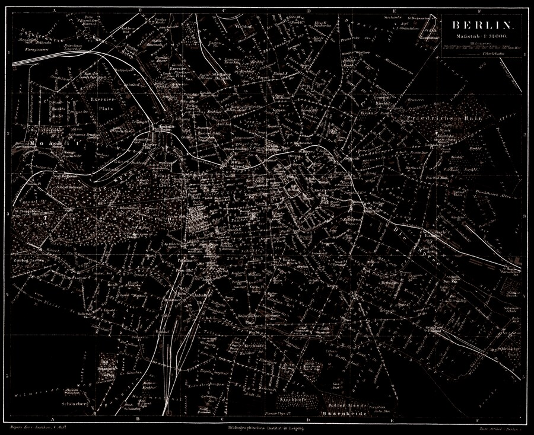

“Poor but sexy.”
Klaus Wowereit — Governing Mayor of Berlin, 2001
The Fragmented City
Because of its unusually complex history over the past two hundred years, Berlin is a physically fragmented city that can be difficult to read. Unlike most European capitals, it is polycentric in configuration with a shifting fabric of juxtaposed fragments, often stemming from three or four distinct periods. Equally characteristic are significant absences that can only be perceived through knowledge of what was once there. The seminar is organized chronologically in order to make this process of retrieval and reassembly more legible. We examine Berlin’s urban landscape at many scales, ranging from individual monuments and buildings to urban ensembles, public parks, fallow sites, and infrastructural systems, along with the social and political topographies that shaped them.“Berlin presents a singular laboratory for learning to interpret multilayered urban landscapes, but one in which the layers are read not by the methodic excavation of clearly delineated strata but by retrieving and reassembling shards produced by upheaval and cataclysm.”

About the seminar
Greater Berlin is a research seminar in the Department of Landscape Architecture that reads the city as a palimpsest — a laboratory for interpreting multilayered urban landscapes assembled from two centuries of upheaval and reinvention. Students develop historical and spatial research skills within a digital humanities framework, working through close readings of texts, films, and images, and a semester-long ArcGIS StoryMaps project that serves as a first sketch for an Urban Atlas of contemporary Berlin.
Teaching Faculty: Bradley Cantrell (Professor and Chair) and Michael Lee (Reuben M. Rainey Professor in Landscape History). Meeting: Wednesday, 12:00–14:30.
This page documents the Fall 2020–2022 iterations of the seminar; the syllabus reflects the Fall 2021 offering.